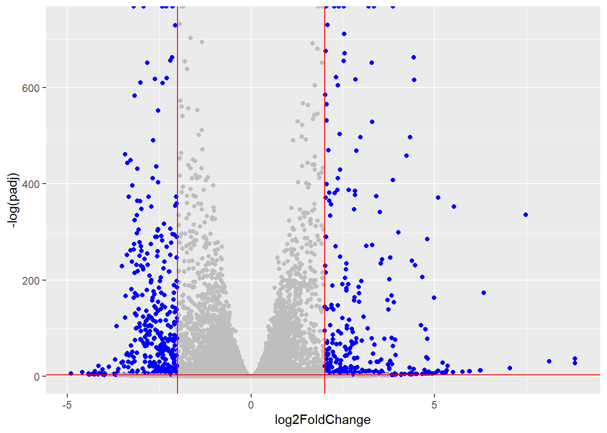
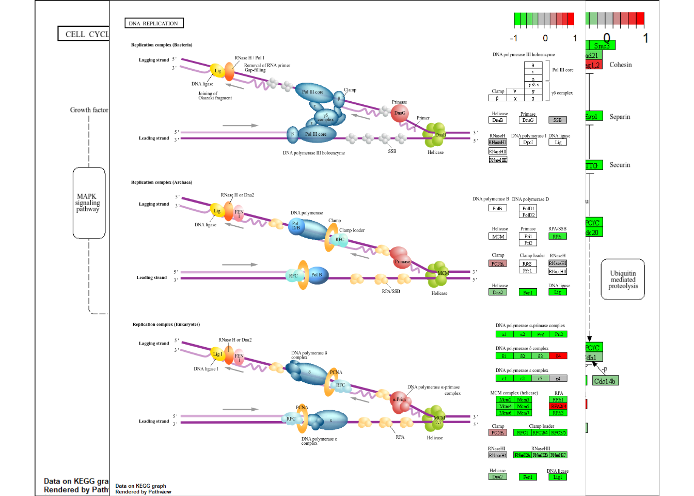

metaFile <- "GSE37704_metadata.csv"
countFile <- "GSE37704_featurecounts.csv"
colData = read.csv(metaFile, row.names=1)
countData = read.csv(countFile, row.names=1)Class 14: RNASeq Mini Project
Background
Here we work through a complete RNASeq analysis project. The input data comes from a knock-down experiment of a HOX gene.
Data Import
Reading the counts and metadata CSV files
Check on data structure
Some book-keeping is required as there looks to be a mis-match between metadata and counts columns.
head(colData) condition
SRR493366 control_sirna
SRR493367 control_sirna
SRR493368 control_sirna
SRR493369 hoxa1_kd
SRR493370 hoxa1_kd
SRR493371 hoxa1_kdhead(countData) length SRR493366 SRR493367 SRR493368 SRR493369 SRR493370
ENSG00000186092 918 0 0 0 0 0
ENSG00000279928 718 0 0 0 0 0
ENSG00000279457 1982 23 28 29 29 28
ENSG00000278566 939 0 0 0 0 0
ENSG00000273547 939 0 0 0 0 0
ENSG00000187634 3214 124 123 205 207 212
SRR493371
ENSG00000186092 0
ENSG00000279928 0
ENSG00000279457 46
ENSG00000278566 0
ENSG00000273547 0
ENSG00000187634 258Looks like we need to get rid of the first “length” column of our counts object.
Q. Complete the code below to remove the troublesome first column from countData
refer to cleancounts <- countData[, -1] of the code
countData <- read.csv(countFile, row.names = 1)
countData[] <- lapply(countData, function(x) as.numeric(as.character(x)))
cleancounts <- as.matrix(countData[, -1])
nonzero_counts <- cleancounts[rowSums(cleancounts) > 0, ]
head(nonzero_counts) SRR493366 SRR493367 SRR493368 SRR493369 SRR493370 SRR493371
ENSG00000279457 23 28 29 29 28 46
ENSG00000187634 124 123 205 207 212 258
ENSG00000188976 1637 1831 2383 1226 1326 1504
ENSG00000187961 120 153 180 236 255 357
ENSG00000187583 24 48 65 44 48 64
ENSG00000187642 4 9 16 14 16 16Q. Complete the code below to filter countData to exclude genes (i.e. rows) where we have 0 read count across all samples (i.e. columns).
Tip: What will rowSums() of countData return and how could you use it in this context?
filtered_counts <- countData[rowSums(countData) > 0, ]
head(filtered_counts) length SRR493366 SRR493367 SRR493368 SRR493369 SRR493370
ENSG00000186092 918 0 0 0 0 0
ENSG00000279928 718 0 0 0 0 0
ENSG00000279457 1982 23 28 29 29 28
ENSG00000278566 939 0 0 0 0 0
ENSG00000273547 939 0 0 0 0 0
ENSG00000187634 3214 124 123 205 207 212
SRR493371
ENSG00000186092 0
ENSG00000279928 0
ENSG00000279457 46
ENSG00000278566 0
ENSG00000273547 0
ENSG00000187634 258DESeq Analysis
Let’s begin by loading the package
library(DESeq2)Warning: package 'matrixStats' was built under R version 4.5.2Now let’s setup DESeq
dds = DESeqDataSetFromMatrix(countData=nonzero_counts,
colData=colData,
design=~condition)Warning in DESeqDataSet(se, design = design, ignoreRank): some variables in
design formula are characters, converting to factorsLet’s run DESeq
dds <- DESeq(dds)Q. Call the summary() function on your results to get a sense of how many genes are up or down-regulated at the default 0.1 p-value cutoff.
Out of the 15,975 genes with nonzero total read count, 4,349 genes (approximately 27%) were up-regulated, and 4,396 genes (approximately 28%) were down-regulated at the default adjusted p-value cutoff of 0.1. The remaining genes either had low counts or were flagged as outliers, providing additional context from DESeq2.
And now we get the results
res <- results(dds)how many genes are up- or down-regulated at the default alpha = 0.1
summary(res)
out of 15975 with nonzero total read count
adjusted p-value < 0.1
LFC > 0 (up) : 4349, 27%
LFC < 0 (down) : 4396, 28%
outliers [1] : 0, 0%
low counts [2] : 1237, 7.7%
(mean count < 0)
[1] see 'cooksCutoff' argument of ?results
[2] see 'independentFiltering' argument of ?resultsData Visualization
Volcano Plot
library(ggplot2)
ggplot(res) +
aes(log2FoldChange, -log(padj)) +
geom_point()Warning: Removed 1237 rows containing missing values or values outside the scale range
(`geom_point()`).
Add threshold lines for fold-change and P-valye and color our subset of genes that make these threshold cut-offs in the plot.
Q. Improve this plot by completing the below code, which adds color and axis labels
mycols <- rep("gray", nrow(res))
mycols[abs(res$log2FoldChange) > 2] <- "blue"
mycols[ res$padj > 0.05] <- "gray"
ggplot(res) +
aes(log2FoldChange, -log(padj)) +
geom_point(col = mycols) +
geom_vline(xintercept =c(-2,2), col="red") +
geom_hline(yintercept = -log(0.05), col ="red")Warning: Removed 1237 rows containing missing values or values outside the scale range
(`geom_point()`).
Add Annotation
Let’s add gene symbols and entrez ids
let’s install the package
if (!requireNamespace("BiocManager", quietly = TRUE))
install.packages("BiocManager")
BiocManager::install("AnnotationDbi")Bioconductor version 3.21 (BiocManager 1.30.26), R 4.5.1 (2025-06-13 ucrt)Warning: package(s) not installed when version(s) same as or greater than current; use
`force = TRUE` to re-install: 'AnnotationDbi'Installation paths not writeable, unable to update packages
path: C:/Program Files/R/R-4.5.1/library
packages:
boot, Matrix, mgcvOld packages: 'BiocManager', 'digest', 'downlit', 'emmeans', 'gert', 'ggplot2',
'igraph', 'pkgdown', 'promises', 'purrr', 'rbibutils', 'readr', 'reshape2',
'S7', 'sf', 'stringr', 'testthat', 'xfun', 'xml2'BiocManager::install("org.Hs.eg.db")Bioconductor version 3.21 (BiocManager 1.30.26), R 4.5.1 (2025-06-13 ucrt)Warning: package(s) not installed when version(s) same as or greater than current; use
`force = TRUE` to re-install: 'org.Hs.eg.db'Installation paths not writeable, unable to update packages
path: C:/Program Files/R/R-4.5.1/library
packages:
boot, Matrix, mgcv
Old packages: 'BiocManager', 'digest', 'downlit', 'emmeans', 'gert', 'ggplot2',
'igraph', 'pkgdown', 'promises', 'purrr', 'rbibutils', 'readr', 'reshape2',
'S7', 'sf', 'stringr', 'testthat', 'xfun', 'xml2'library(AnnotationDbi)
library(org.Hs.eg.db)Q. Use the mapIDs() function multiple times to add SYMBOL, ENTREZID and GENENAME annotation to our results by completing the code below.
res$symbol = mapIds(org.Hs.eg.db,
keys = row.names(res),
keytype = "ENSEMBL",
column = "SYMBOL",
multiVals = "first")'select()' returned 1:many mapping between keys and columnsres$entrez = mapIds(org.Hs.eg.db,
keys = row.names(res),
keytype = "ENSEMBL",
column = "ENTREZID",
multiVals = "first")'select()' returned 1:many mapping between keys and columnsres$name = mapIds(org.Hs.eg.db,
keys = row.names(res),
keytype = "ENSEMBL",
column = "GENENAME",
multiVals = "first")'select()' returned 1:many mapping between keys and columnshead(res, 10)log2 fold change (MLE): condition hoxa1 kd vs control sirna
Wald test p-value: condition hoxa1 kd vs control sirna
DataFrame with 10 rows and 9 columns
baseMean log2FoldChange lfcSE stat pvalue
<numeric> <numeric> <numeric> <numeric> <numeric>
ENSG00000279457 29.913579 0.1792571 0.3248216 0.551863 5.81042e-01
ENSG00000187634 183.229650 0.4264571 0.1402658 3.040350 2.36304e-03
ENSG00000188976 1651.188076 -0.6927205 0.0548465 -12.630158 1.43990e-36
ENSG00000187961 209.637938 0.7297556 0.1318599 5.534326 3.12428e-08
ENSG00000187583 47.255123 0.0405765 0.2718928 0.149237 8.81366e-01
ENSG00000187642 11.979750 0.5428105 0.5215598 1.040744 2.97994e-01
ENSG00000188290 108.922128 2.0570638 0.1969053 10.446970 1.51282e-25
ENSG00000187608 350.716868 0.2573837 0.1027266 2.505522 1.22271e-02
ENSG00000188157 9128.439422 0.3899088 0.0467163 8.346304 7.04321e-17
ENSG00000237330 0.158192 0.7859552 4.0804729 0.192614 8.47261e-01
padj symbol entrez name
<numeric> <character> <character> <character>
ENSG00000279457 6.86555e-01 NA NA NA
ENSG00000187634 5.15718e-03 SAMD11 148398 sterile alpha motif ..
ENSG00000188976 1.76549e-35 NOC2L 26155 NOC2 like nucleolar ..
ENSG00000187961 1.13413e-07 KLHL17 339451 kelch like family me..
ENSG00000187583 9.19031e-01 PLEKHN1 84069 pleckstrin homology ..
ENSG00000187642 4.03379e-01 PERM1 84808 PPARGC1 and ESRR ind..
ENSG00000188290 1.30538e-24 HES4 57801 hes family bHLH tran..
ENSG00000187608 2.37452e-02 ISG15 9636 ISG15 ubiquitin like..
ENSG00000188157 4.21963e-16 AGRN 375790 agrin
ENSG00000237330 NA RNF223 401934 ring finger protein ..Q. Finally for this section let’s reorder these results by adjusted p-value and save them to a CSV file in your current project directory.
Let’s Reorder results by adjusted p-value and save as CSV file:
res <- res[order(res$padj), ]
write.csv(res, file = "deseq_results.csv")Pathway Analysis
KEGG pathways
- run this in console:
BiocManager::install( c("pathview", "gage", "gageData") )*
Run gage analysis w/ KEGG
Install the packages for KEGG and GO first
if (!requireNamespace("BiocManager", quietly = TRUE))
install.packages("BiocManager")
BiocManager::install(c("gage", "gageData", "pathview"))Bioconductor version 3.21 (BiocManager 1.30.26), R 4.5.1 (2025-06-13 ucrt)Warning: package(s) not installed when version(s) same as or greater than current; use
`force = TRUE` to re-install: 'gage' 'gageData' 'pathview'Installation paths not writeable, unable to update packages
path: C:/Program Files/R/R-4.5.1/library
packages:
boot, Matrix, mgcvOld packages: 'BiocManager', 'digest', 'downlit', 'emmeans', 'gert', 'ggplot2',
'igraph', 'pkgdown', 'promises', 'purrr', 'rbibutils', 'readr', 'reshape2',
'S7', 'sf', 'stringr', 'testthat', 'xfun', 'xml2'library(gage)
library(gageData)
library(pathview)We need a named vector of fold-change value as input for gage.
foldchanges <- res$log2FoldChange
names(foldchanges) <- res$entrez
head(foldchanges) 1266 54855 1465 2034 2150 6659
-2.422719 3.201955 -2.313738 -1.888019 3.344508 2.392288 data("kegg.sets.hs")
keggres = gage(foldchanges, gsets=kegg.sets.hs)head(keggres$less, 2) p.geomean stat.mean p.val q.val
hsa04110 Cell cycle 8.995727e-06 -4.378644 8.995727e-06 0.001889103
hsa03030 DNA replication 9.424076e-05 -3.951803 9.424076e-05 0.009841047
set.size exp1
hsa04110 Cell cycle 121 8.995727e-06
hsa03030 DNA replication 36 9.424076e-05pathview(pathway.id = "hsa04110", gene.data = foldchanges)'select()' returned 1:1 mapping between keys and columnsInfo: Working in directory C:/Users/Linda Kubera/Desktop/Bimm 143 Class/Class 14Info: Writing image file hsa04110.pathview.pnglibrary(png)
library(grid)
img <- readPNG("hsa04110.pathview.png")
grid::grid.raster(img)
library(pathview)
library(png)
library(grid)
# First KEGG pathway
pathview(pathway.id = "hsa04110", gene.data = foldchanges)'select()' returned 1:1 mapping between keys and columnsInfo: Working in directory C:/Users/Linda Kubera/Desktop/Bimm 143 Class/Class 14Info: Writing image file hsa04110.pathview.pngimg1 <- readPNG("hsa04110.pathview.png")
grid::grid.raster(img1)
# Second KEGG pathway
pathview(pathway.id = "hsa03030", gene.data = foldchanges)'select()' returned 1:1 mapping between keys and columnsInfo: Working in directory C:/Users/Linda Kubera/Desktop/Bimm 143 Class/Class 14Info: Writing image file hsa03030.pathview.pngimg2 <- readPNG("hsa03030.pathview.png")
grid::grid.raster(img2)
Q. Can you do the same procedure as above to plot the pathview figures for the top 5 down-reguled pathways?
The top 5 down-regulated pathways are: hsa00232 (Caffeine metabolism), hsa00983 (Drug metabolism – other enzymes), hsa01100 (Metabolic pathways), hsa00230 (Purine metabolism), and hsa05340 (Primary immunodeficiency). I used pathview() to plot these pathways, highlighting down-regulated genes in HOXA1 knockdown versus control.
fc <- res$log2FoldChange
names(fc) <- rownames(res)keggResults <- gage(fc, gsets = kegg.sets.hs)str(keggResults)List of 3
$ greater: num [1:229, 1:6] NA NA NA NA NA NA NA NA NA NA ...
..- attr(*, "dimnames")=List of 2
.. ..$ : chr [1:229] "hsa00232 Caffeine metabolism" "hsa00983 Drug metabolism - other enzymes" "hsa01100 Metabolic pathways" "hsa00230 Purine metabolism" ...
.. ..$ : chr [1:6] "p.geomean" "stat.mean" "p.val" "q.val" ...
$ less : num [1:229, 1:6] NA NA NA NA NA NA NA NA NA NA ...
..- attr(*, "dimnames")=List of 2
.. ..$ : chr [1:229] "hsa00232 Caffeine metabolism" "hsa00983 Drug metabolism - other enzymes" "hsa01100 Metabolic pathways" "hsa00230 Purine metabolism" ...
.. ..$ : chr [1:6] "p.geomean" "stat.mean" "p.val" "q.val" ...
$ stats : num [1:229, 1:2] NaN NaN NaN NaN NaN NaN NaN NaN NaN NaN ...
..- attr(*, "dimnames")=List of 2
.. ..$ : chr [1:229] "hsa00232 Caffeine metabolism" "hsa00983 Drug metabolism - other enzymes" "hsa01100 Metabolic pathways" "hsa00230 Purine metabolism" ...
.. ..$ : chr [1:2] "stat.mean" "exp1"class(keggResults)[1] "list"str(keggResults)List of 3
$ greater: num [1:229, 1:6] NA NA NA NA NA NA NA NA NA NA ...
..- attr(*, "dimnames")=List of 2
.. ..$ : chr [1:229] "hsa00232 Caffeine metabolism" "hsa00983 Drug metabolism - other enzymes" "hsa01100 Metabolic pathways" "hsa00230 Purine metabolism" ...
.. ..$ : chr [1:6] "p.geomean" "stat.mean" "p.val" "q.val" ...
$ less : num [1:229, 1:6] NA NA NA NA NA NA NA NA NA NA ...
..- attr(*, "dimnames")=List of 2
.. ..$ : chr [1:229] "hsa00232 Caffeine metabolism" "hsa00983 Drug metabolism - other enzymes" "hsa01100 Metabolic pathways" "hsa00230 Purine metabolism" ...
.. ..$ : chr [1:6] "p.geomean" "stat.mean" "p.val" "q.val" ...
$ stats : num [1:229, 1:2] NaN NaN NaN NaN NaN NaN NaN NaN NaN NaN ...
..- attr(*, "dimnames")=List of 2
.. ..$ : chr [1:229] "hsa00232 Caffeine metabolism" "hsa00983 Drug metabolism - other enzymes" "hsa01100 Metabolic pathways" "hsa00230 Purine metabolism" ...
.. ..$ : chr [1:2] "stat.mean" "exp1"# Extract the 'less' (down-regulated) matrix
downMatrix <- keggResults$less
# Convert to a data frame to make it easier to work with
downDF <- as.data.frame(downMatrix)
# Order by p-value (ascending) to get most significant
downDF <- downDF[order(downDF$p.val), ]
# Get the top 5 pathway names
top5_down <- rownames(downDF)[1:5]
top5_down[1] "hsa00232 Caffeine metabolism"
[2] "hsa00983 Drug metabolism - other enzymes"
[3] "hsa01100 Metabolic pathways"
[4] "hsa00230 Purine metabolism"
[5] "hsa05340 Primary immunodeficiency" # Get top 5 down-regulated pathways
top5_down <- rownames(keggres$less)[1:5]
# Extract 8-character KEGG IDs
top5_ids <- substr(top5_down, 1, 8)
# Generate Pathview plots
library(pathview)
pathview(gene.data = foldchanges, pathway.id = top5_ids, species = "hsa")'select()' returned 1:1 mapping between keys and columnsInfo: Working in directory C:/Users/Linda Kubera/Desktop/Bimm 143 Class/Class 14Info: Writing image file hsa04110.pathview.png'select()' returned 1:1 mapping between keys and columnsInfo: Working in directory C:/Users/Linda Kubera/Desktop/Bimm 143 Class/Class 14Info: Writing image file hsa03030.pathview.png'select()' returned 1:1 mapping between keys and columnsInfo: Working in directory C:/Users/Linda Kubera/Desktop/Bimm 143 Class/Class 14Info: Writing image file hsa05130.pathview.png'select()' returned 1:1 mapping between keys and columnsInfo: Working in directory C:/Users/Linda Kubera/Desktop/Bimm 143 Class/Class 14Info: Writing image file hsa03013.pathview.png'select()' returned 1:1 mapping between keys and columnsInfo: Working in directory C:/Users/Linda Kubera/Desktop/Bimm 143 Class/Class 14Info: Writing image file hsa03440.pathview.pngsetwd("C:/Users/Linda Kubera/Desktop/Bimm 143 Class/Class 14")list.files(pattern = "\\.png$") [1] "hsa03013.pathview.png" "hsa03013.png" "hsa03030.pathview.png"
[4] "hsa03030.png" "hsa03440.pathview.png" "hsa03440.png"
[7] "hsa04110.pathview.png" "hsa04110.png" "hsa05130.pathview.png"
[10] "hsa05130.png" pathway_files <- c("hsa03030.pathview.png",
"hsa05130.pathview.png",
"hsa03013.pathview.png",
"hsa03440.pathview.png")knitr::include_graphics("hsa03030.pathview.png")
knitr::include_graphics("hsa05130.pathview.png")
knitr::include_graphics("hsa03013.pathview.png")
knitr::include_graphics("hsa03440.pathview.png")
GO terms
Same analysis but using GO genesets rather than KEGG.
data(go.sets.hs)
data(go.subs.hs)
gobpsets = go.sets.hs[go.subs.hs$BP]
gobpres = gage(foldchanges, gsets=gobpsets, same.dir=TRUE)
lapply(gobpres, head)$greater
p.geomean stat.mean p.val
GO:0007156 homophilic cell adhesion 8.519724e-05 3.824205 8.519724e-05
GO:0002009 morphogenesis of an epithelium 1.396681e-04 3.653886 1.396681e-04
GO:0048729 tissue morphogenesis 1.432451e-04 3.643242 1.432451e-04
GO:0007610 behavior 1.925222e-04 3.565432 1.925222e-04
GO:0060562 epithelial tube morphogenesis 5.932837e-04 3.261376 5.932837e-04
GO:0035295 tube development 5.953254e-04 3.253665 5.953254e-04
q.val set.size exp1
GO:0007156 homophilic cell adhesion 0.1951953 113 8.519724e-05
GO:0002009 morphogenesis of an epithelium 0.1951953 339 1.396681e-04
GO:0048729 tissue morphogenesis 0.1951953 424 1.432451e-04
GO:0007610 behavior 0.1967577 426 1.925222e-04
GO:0060562 epithelial tube morphogenesis 0.3565320 257 5.932837e-04
GO:0035295 tube development 0.3565320 391 5.953254e-04
$less
p.geomean stat.mean p.val
GO:0048285 organelle fission 1.536227e-15 -8.063910 1.536227e-15
GO:0000280 nuclear division 4.286961e-15 -7.939217 4.286961e-15
GO:0007067 mitosis 4.286961e-15 -7.939217 4.286961e-15
GO:0000087 M phase of mitotic cell cycle 1.169934e-14 -7.797496 1.169934e-14
GO:0007059 chromosome segregation 2.028624e-11 -6.878340 2.028624e-11
GO:0000236 mitotic prometaphase 1.729553e-10 -6.695966 1.729553e-10
q.val set.size exp1
GO:0048285 organelle fission 5.841698e-12 376 1.536227e-15
GO:0000280 nuclear division 5.841698e-12 352 4.286961e-15
GO:0007067 mitosis 5.841698e-12 352 4.286961e-15
GO:0000087 M phase of mitotic cell cycle 1.195672e-11 362 1.169934e-14
GO:0007059 chromosome segregation 1.658603e-08 142 2.028624e-11
GO:0000236 mitotic prometaphase 1.178402e-07 84 1.729553e-10
$stats
stat.mean exp1
GO:0007156 homophilic cell adhesion 3.824205 3.824205
GO:0002009 morphogenesis of an epithelium 3.653886 3.653886
GO:0048729 tissue morphogenesis 3.643242 3.643242
GO:0007610 behavior 3.565432 3.565432
GO:0060562 epithelial tube morphogenesis 3.261376 3.261376
GO:0035295 tube development 3.253665 3.253665head(gobpres$less, 4) p.geomean stat.mean p.val
GO:0048285 organelle fission 1.536227e-15 -8.063910 1.536227e-15
GO:0000280 nuclear division 4.286961e-15 -7.939217 4.286961e-15
GO:0007067 mitosis 4.286961e-15 -7.939217 4.286961e-15
GO:0000087 M phase of mitotic cell cycle 1.169934e-14 -7.797496 1.169934e-14
q.val set.size exp1
GO:0048285 organelle fission 5.841698e-12 376 1.536227e-15
GO:0000280 nuclear division 5.841698e-12 352 4.286961e-15
GO:0007067 mitosis 5.841698e-12 352 4.286961e-15
GO:0000087 M phase of mitotic cell cycle 1.195672e-11 362 1.169934e-14Reactome
Lots of folkslike the reactome web interface. You can also run this as an R fucntion but lets look at the website first https://reactome.org/
The website wants a text file with one gene symbol per line of the genes ypu want to map to the pathways.
sig_genes <- res[res$padj <= 0.05 & !is.na(res$padj), "symbol"]
print(paste("Total number of significant genes:", length(sig_genes)))[1] "Total number of significant genes: 8147"and write out to a file:
write.table(sig_genes, file="significant_genes.txt", row.names=FALSE, col.names=FALSE, quote=FALSE)Section 5. GO online (OPTIONAL)
Q: What pathway has the most significant “Entities p-value”? Do the most significant pathways listed match your previous KEGG results? What factors could cause differences between the two methods?
head(keggres$less, 5) p.geomean stat.mean
hsa04110 Cell cycle 8.995727e-06 -4.378644
hsa03030 DNA replication 9.424076e-05 -3.951803
hsa05130 Pathogenic Escherichia coli infection 1.405864e-04 -3.765330
hsa03013 RNA transport 1.375901e-03 -3.028500
hsa03440 Homologous recombination 3.066756e-03 -2.852899
p.val q.val
hsa04110 Cell cycle 8.995727e-06 0.001889103
hsa03030 DNA replication 9.424076e-05 0.009841047
hsa05130 Pathogenic Escherichia coli infection 1.405864e-04 0.009841047
hsa03013 RNA transport 1.375901e-03 0.072234819
hsa03440 Homologous recombination 3.066756e-03 0.128803765
set.size exp1
hsa04110 Cell cycle 121 8.995727e-06
hsa03030 DNA replication 36 9.424076e-05
hsa05130 Pathogenic Escherichia coli infection 53 1.405864e-04
hsa03013 RNA transport 144 1.375901e-03
hsa03440 Homologous recombination 28 3.066756e-03The pathway with the most significant “Entities p-value” is hsa04110: Cell cycle (p-value ≈ 8.99e-6).
This matches the top pathways observed in our previous KEGG analysis / differs from the previous KEGG results.
Possible reasons for differences include differences in statistical methods between GAGE and standard KEGG enrichment, variation in gene set coverage, multiple testing corrections, and differences in input data filtering or preprocessing.
Save Our Results
write.csv(res, file="myresults.csv")